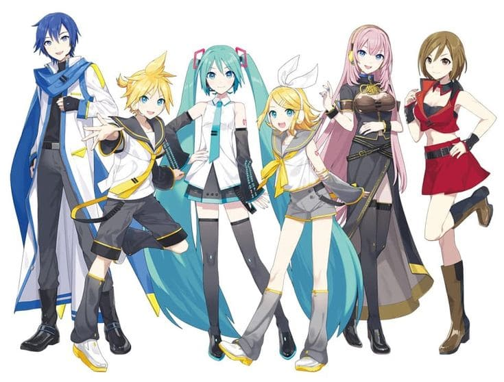
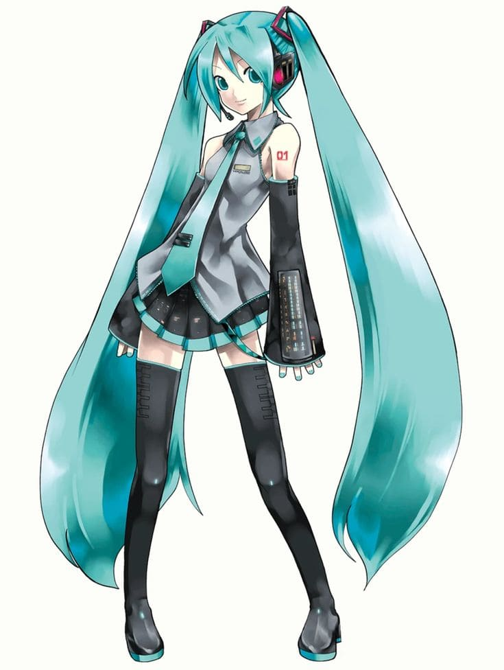
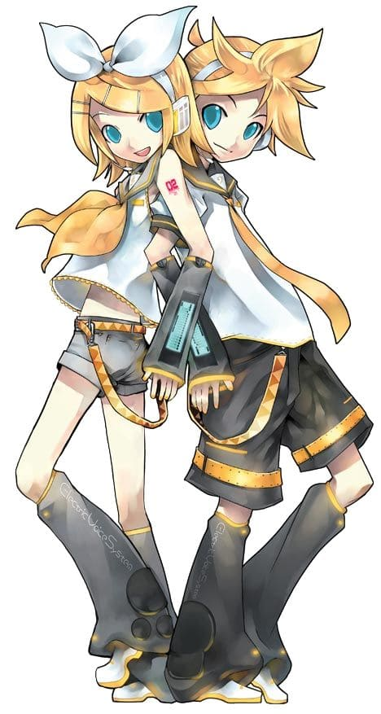
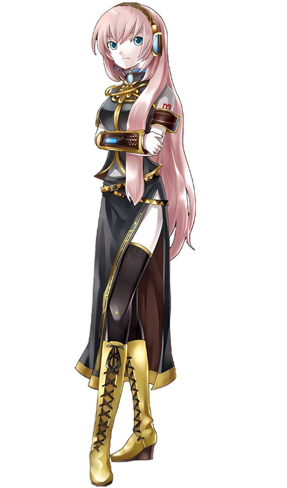

Postagens de fóruns

Seja bem-vindo ao Vocaloid Brasil!
Um blog feito especialmente para quem ama o universo dos cantores virtuais! Nosso objetivo é compartilhar curiosidades, músicas, histórias, informações sobre os personagens e tudo o que torna o universo do Vocaloid tão divertido. Se você já é fã ou está começando a conhecer esse mundo aqui é local ideal para você se reunir com outros fans brasileiros de vocaloid. Esperamos que você se divirta, e vamos expandir este fansite.
O que é vocaloid?
Vocaloid é um software de síntese de voz desenvolvido pela Yamaha, que permite aos usuários criar músicas com vozes sintetizadas. Ele utiliza tecnologia avançada para replicar nuances da voz humana, permitindo a criação de melodias a partir de letras e partituras inseridas pelo usuário. Os Vocaloids são personagens virtuais, como Hatsune Miku, que se tornaram ícones da cultura pop e da música eletrônica, influenciando a moda, a arte e a animação.
Principais cantores do vocaloid
Hatsume Miku

Hatsune Miku (初音ミク), oficialmente codinome CV01, é um software de voicebank para Vocaloid desenvolvido pela Crypton Future Media. Seu mascote oficial é retratado como uma garota de dezesseis anos com longas maria-chiquinhas turquesa. A personificação de Miku foi comercializada como uma idol virtual e se apresentou em shows virtuais ao vivo no palco como uma projeção holográfica animada (projeção traseira em uma tela de vidro com revestimento especial).
Kagamine Rin & Len

Kagamine Rin & Len (鏡音リン・レン), oficialmente codinome CV02, são um par de bancos de voz de software Vocaloid desenvolvidos pela Crypton Future Media, com sede em Sapporo, Japão. O antropomorfismo oficial deles consiste em um par de cantores de 14 anos, um menino e uma menina, respectivamente chamados Len e Rin. Suas vozes são da dubladora Asami Shimoda.
Luka

Megurine Luka (巡音ルカ) é uma cantora virtual japonesa desenvolvida pela Crypton Future Media a 30 de janeiro de 2009, para o software de síntese de voz Vocaloid. A voz de Megurine Luka é dublada pela Yū Asakawa.
Kaito
.jpg)
KAITO (カイト) é um Vocaloid japonês inicialmente desenvolvido pela Yamaha Corporation e distribuída pela Crypton Future Media, sendo um dos vocais feitos para o Projeto Daisy. Todas as versões tiveram sua voz provida por Fuuga Naoto. Kaito foi criado como um complemente a Meiko. Seu nome foi criado a partir da escolha de um nome que, quando fosse falado ao mesmo tempo que MEIKO, soasse harmonioso.
Meiko
.jpg)
MEIKO (メイコ), originalmente "Hanako", é uma VOCALOID japonês originalmente desenvolvido pela Yamaha Corporation e distribuído pela Crypton Future Media, Inc.Sua voz é fornecido pela cantora japonesa Meiko Haigo (拝 郷 メ イ コ).
Comentários de usuários